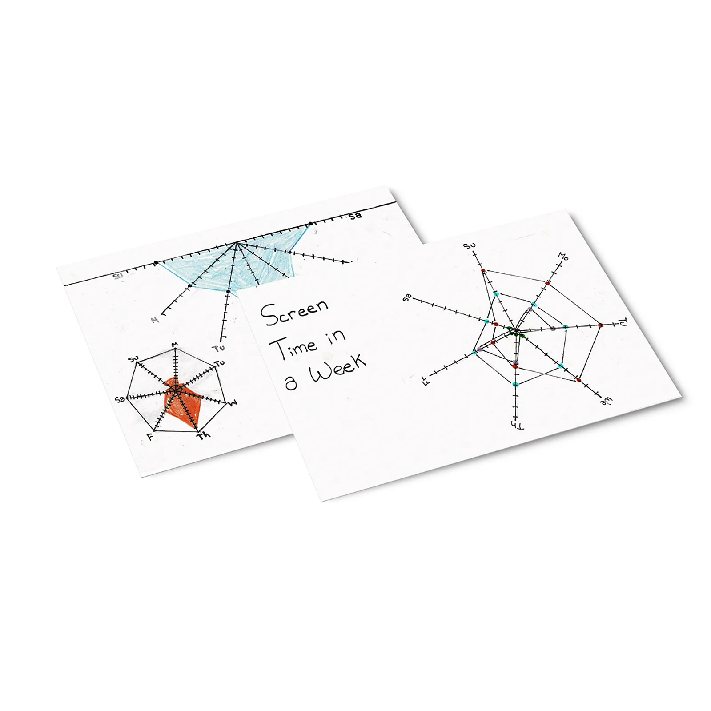
Dear Data
Project Overview
"Dear Data" is a design project that I embarked on to explore the intersection between data visualization and personal storytelling, inspired by the Dear Data project. Over a period of 14 weeks, I collected information about my daily life, and then created a unique data visualization each week to communicate this information in a creative and engaging way.
Collection of Data
Data was self-reported for these postcards and were collected over the span of a week, from 2020 to 2021.
Design Process
The project began with me selecting a different theme to explore each week, such as my daily routines, emotions, or social interactions. I then created a set of rules to collect data related to that theme, such as notifications in a week or distractions in a day.
Once I had collected the data, I began the process of designing a unique data visualization to communicate this information. I used a variety of different techniques and mediums, including drawing, painting, and digital design, to create a visual representation of the data.
Results
The "Dear Data" project was a huge success, both in terms of the final designs and the community that it created. The project helped me to develop my skills in data visualization, while also providing a unique and personal way to explore different themes related to my daily life. The project has hopefully inspired others to create their own data visualizations and to explore the possibilities of personal storytelling through data. Overall, the "Dear Data" project was a testament to the power of design to communicate complex ideas in a visually engaging way, and to the importance of personal storytelling in our digital age.
Postcards (14 Weeks)
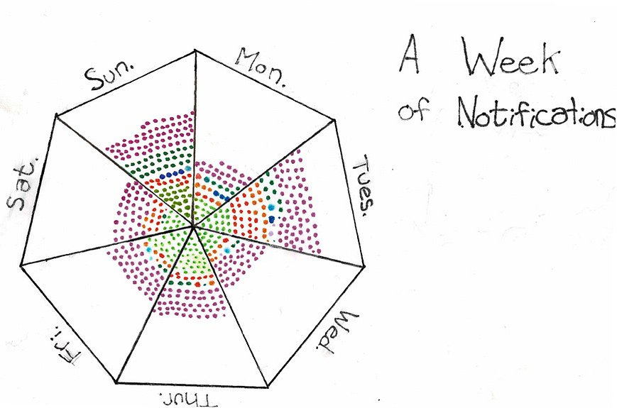
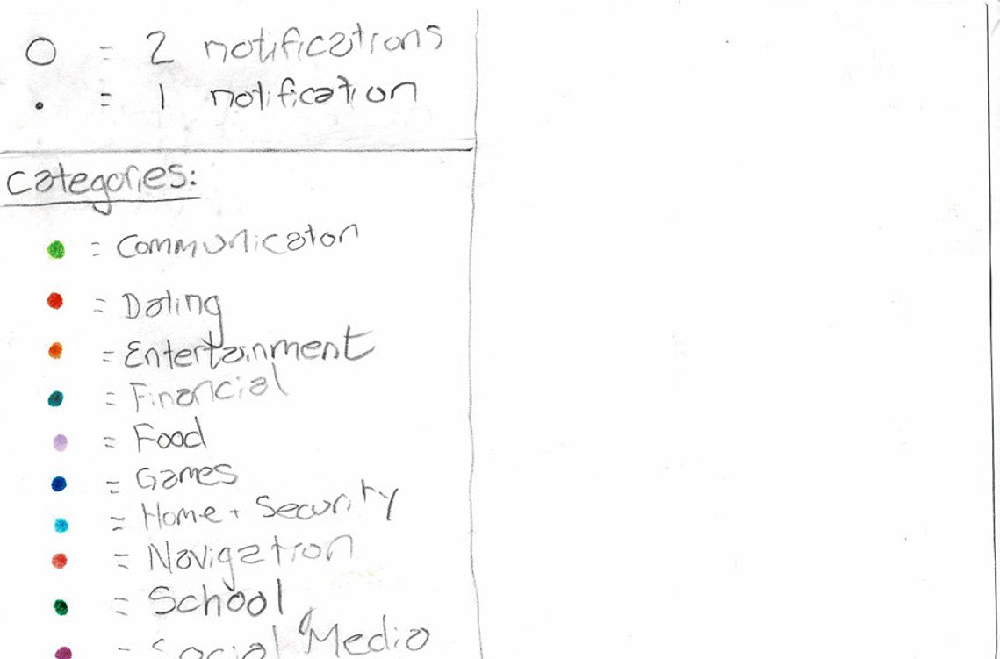
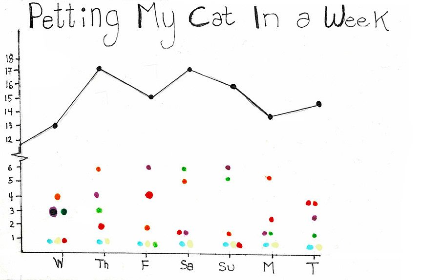
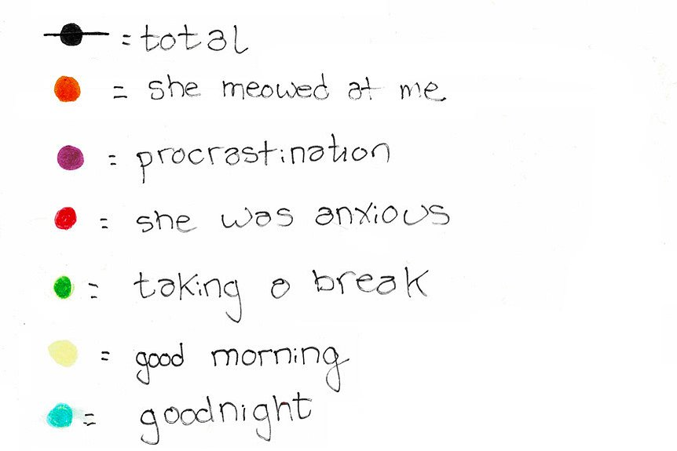
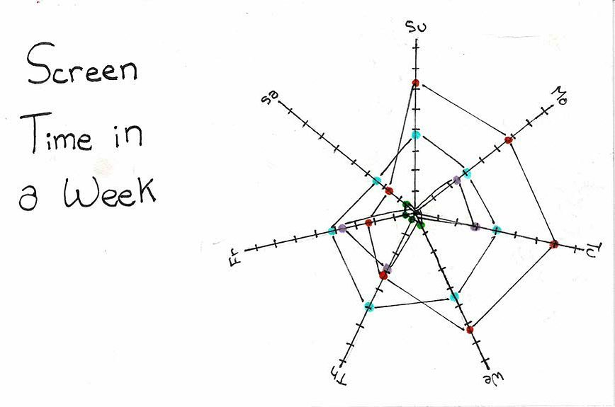
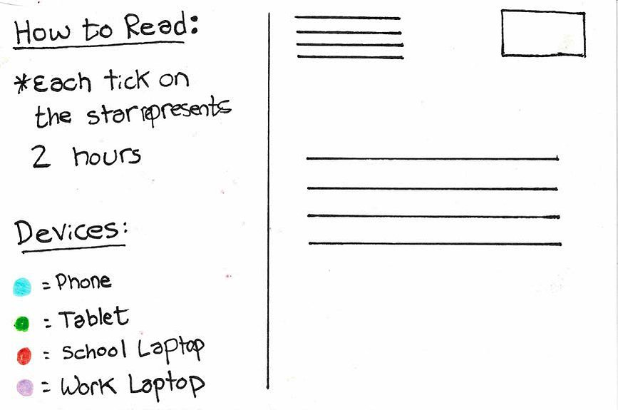
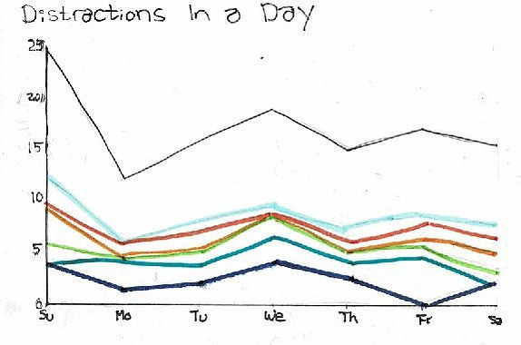
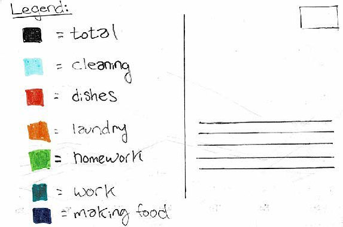
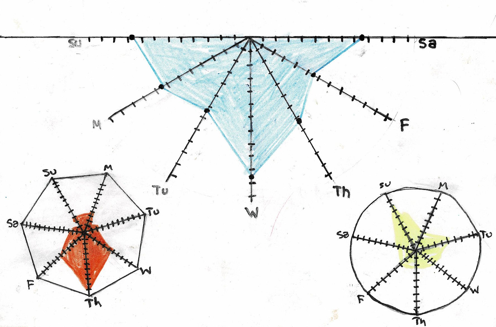
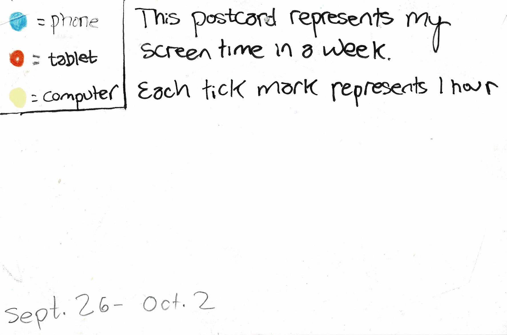
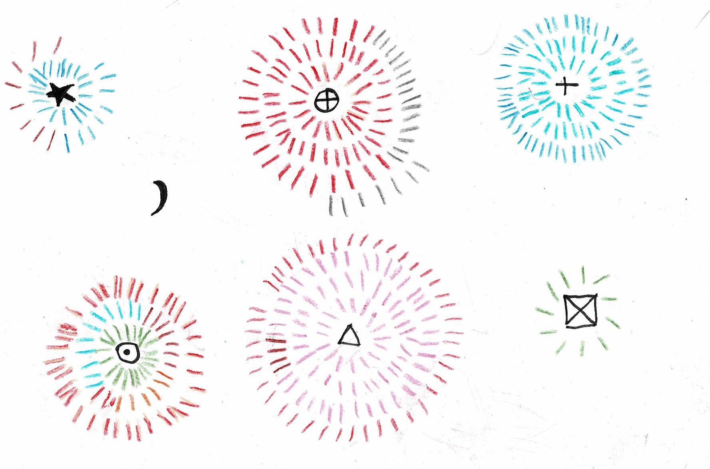
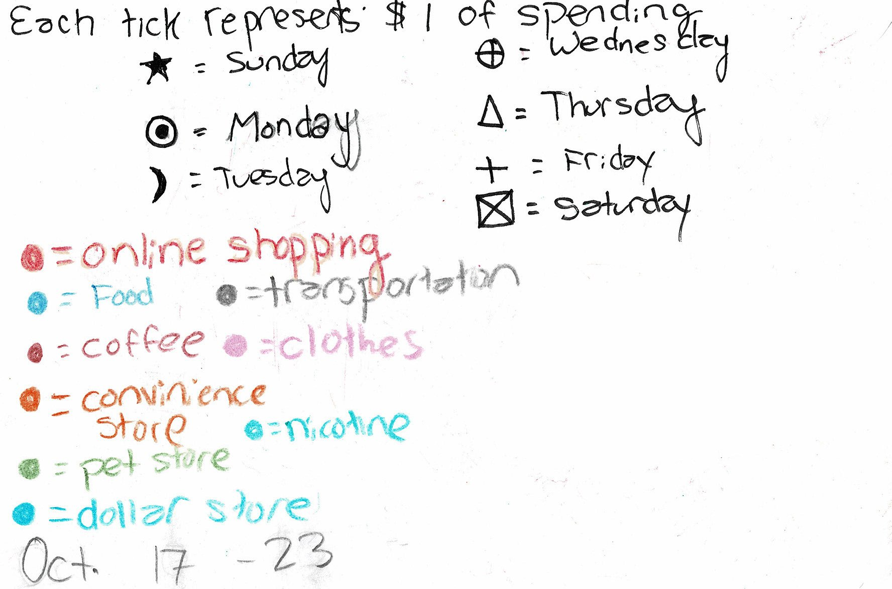
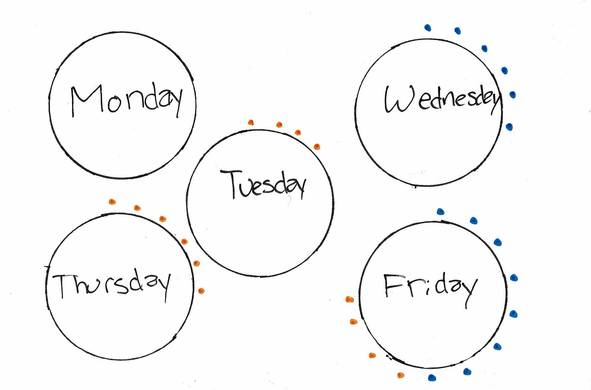
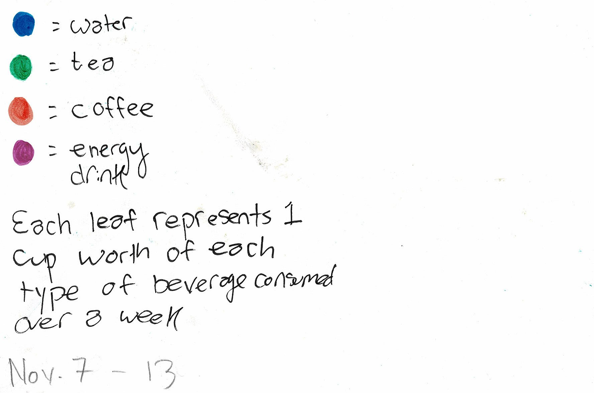
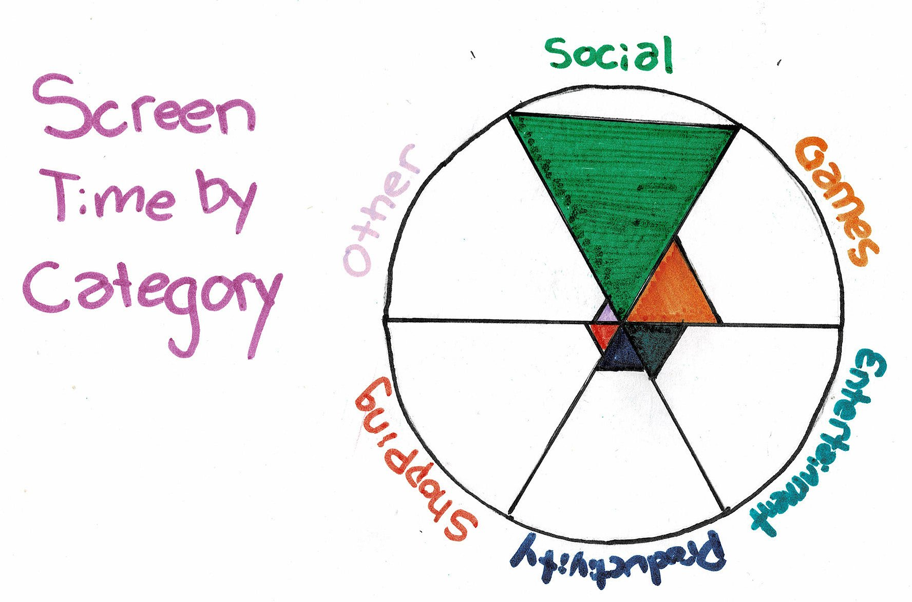
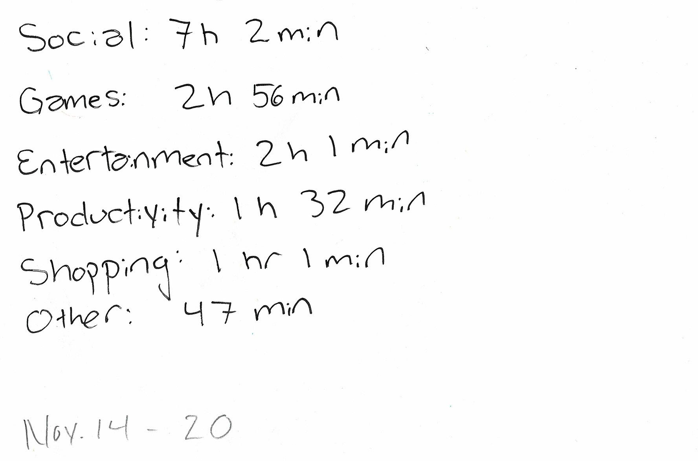